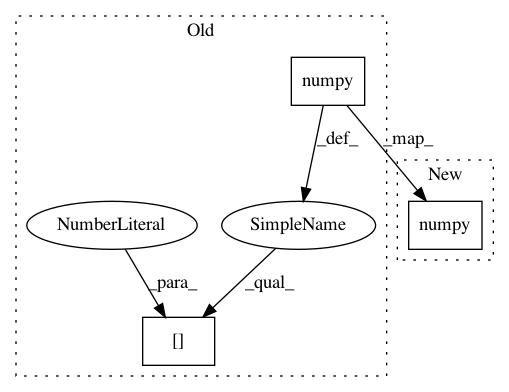

9f352f5072543a5a47b78943bf9a729eb18502c6,src/model.py,DRIT,update_D_content,#DRIT#,230
Before Change
self.forward_content()
self.disContent_opt.zero_grad()
loss_D_Content = self.backward_contentD(self.z_content_a, self.z_content_b)
self.disContent_loss = loss_D_Content.data.cpu().numpy()[0]
nn.utils.clip_grad_norm(self.disContent.parameters(), 5)
self.disContent_opt.step()
def update_D(self, image_a, image_b):
After Change
self.forward_content()
self.disContent_opt.zero_grad()
loss_D_Content = self.backward_contentD(self.z_content_a, self.z_content_b)
self.disContent_loss = loss_D_Content.data.cpu().numpy()
nn.utils.clip_grad_norm_(self.disContent.parameters(), 5)
self.disContent_opt.step()
def update_D(self, image_a, image_b):
In pattern: SUPERPATTERN
Frequency: 17
Non-data size: 3
Instances
Project Name: HsinYingLee/DRIT
Commit Name: 9f352f5072543a5a47b78943bf9a729eb18502c6
Time: 2018-07-02
Author: hytseng0509@gmail.com
File Name: src/model.py
Class Name: DRIT
Method Name: update_D_content
Project Name: utkuozbulak/pytorch-cnn-visualizations
Commit Name: 6c16951d1f4e5407698c478fc53dd08b8e149f4f
Time: 2018-07-19
Author: utku.ozbulak@gmail.com
File Name: src/inverted_representation.py
Class Name: InvertedRepresentation
Method Name: generate_inverted_image_specific_layer
Project Name: utkuozbulak/pytorch-cnn-visualizations
Commit Name: 6c16951d1f4e5407698c478fc53dd08b8e149f4f
Time: 2018-07-19
Author: utku.ozbulak@gmail.com
File Name: src/generate_class_specific_samples.py
Class Name: ClassSpecificImageGeneration
Method Name: generate
Project Name: PacktPublishing/Deep-Reinforcement-Learning-Hands-On
Commit Name: 3b8393dbff05e292594b66db9a595ac5536e3bb9
Time: 2018-04-25
Author: max.lapan@gmail.com
File Name: ch03/03_atari_gan.py
Class Name:
Method Name:
Project Name: utkuozbulak/pytorch-cnn-visualizations
Commit Name: 6c16951d1f4e5407698c478fc53dd08b8e149f4f
Time: 2018-07-19
Author: utku.ozbulak@gmail.com
File Name: src/cnn_layer_visualization.py
Class Name: CNNLayerVisualization
Method Name: visualise_layer_with_hooks
Project Name: HsinYingLee/DRIT
Commit Name: 9f352f5072543a5a47b78943bf9a729eb18502c6
Time: 2018-07-02
Author: hytseng0509@gmail.com
File Name: src/model.py
Class Name: DRIT
Method Name: backward_G_alone
Project Name: HsinYingLee/DRIT
Commit Name: 9f352f5072543a5a47b78943bf9a729eb18502c6
Time: 2018-07-02
Author: hytseng0509@gmail.com
File Name: src/model.py
Class Name: DRIT
Method Name: update_D
Project Name: utkuozbulak/pytorch-cnn-visualizations
Commit Name: 6c16951d1f4e5407698c478fc53dd08b8e149f4f
Time: 2018-07-19
Author: utku.ozbulak@gmail.com
File Name: src/cnn_layer_visualization.py
Class Name: CNNLayerVisualization
Method Name: visualise_layer_without_hooks
Project Name: utkuozbulak/pytorch-cnn-visualizations
Commit Name: 6c16951d1f4e5407698c478fc53dd08b8e149f4f
Time: 2018-07-19
Author: utku.ozbulak@gmail.com
File Name: src/deep_dream.py
Class Name: DeepDream
Method Name: dream